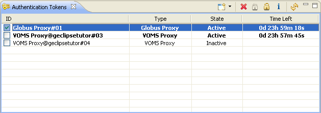

Managing Authentication Tokens
Working on a Grid infrastructure can require the management of more than one
Authentication/Authorization token by the user. Imaging you are working one two
different Grid projects at the same time using different middlewares. Or you work
in the same project with different roles (i.e user and admin). For both
cases, g-Eclipse offers the management of Authentication Tokens with the
g-Eclipse Authentication Tokens View.

The Authentication Tokens View shows a list of created tokens by name, type, state and
the valid time left. Be aware, that tokens are in state inactive after the creation
and need to be activated with the help of this view. Activated tokens are written
in bold letters. The radio checkbox on the left selected the token which is used
by default for all Grid actions. The user can change the default with the help of
this view.
The Authentication and Authorization Tokens can be managed by the
Authentication Tokens View in the following manner:
- Create a token

After the selection of the Token type, the Authentication Token Wizards starts (more detail
here).
- Delete a token

Select a token in the list and push the button to delete the Token from the list.
The selected token is highlighted.
- Activate a token

Select an inactive token in the list and push the button to activate the token.
Activation is needed to use the tokens.
- De-activate a token

Select an active token in the list and push the button to deactivate the token.
- Get token information

Select a token and push the button to get informed about the token in more details
in a separate window.
- Refresh the token list

As the valid time left for a token is changing continuesly, the refresh Button updates
the information on the user's request.